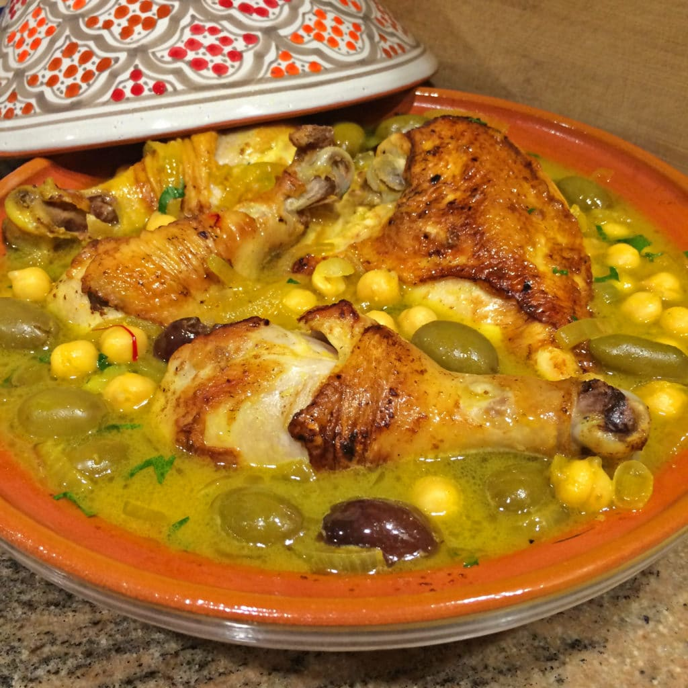

Chicken Tagine

Description
A classic dish, this Moroccan chicken tagine gets tons of flavor from preserved lemons, olives, and onions. It can be cooked on the stovetop in an authentic tagine or roasted in a baking pan in the oven, depending on what equipment you have at your disposal. Either way, you'll enjoy a delicious meal that is sure to please everyone at the dinner table.
Ingredients
- 2 teaspoons powdered ginger
- 1 teaspoon black pepper
- 1 teaspoon turmeric (or 1/4 teaspoon Moroccan yellow colorant)
- 1/2 teaspoon salt, or to taste
- 1/4 teaspoon saffron threads, crumbled, optional
- 1 teaspoon smen, optional
- 1/4 to 1/2 teaspoon ras el hanout, optional
- 1/3 cup olive oil
- 2 handfuls pitted olives (green or red, or mixed)
- 1/4 cup water, approximately, if using a tagine
- 1 to 2 preserved lemons, quartered and seeds removed
- 1 whole chicken, cut into pieces, skin removed, back discarded or reserved for another use
- 2 large white or yellow onions, finely chopped
- 2 to 3 cloves garlic, minced
- 1 small handful fresh cilantro, chopped
- 1 small handful fresh parsley, chopped
Steps
- Remove the flesh from the preserved lemons and chop the flesh finely. Reserve rind for cooking.
- Add the lemon flesh to a bowl along with the chicken, onion, garlic, cilantro, parsley, ginger, pepper, turmeric, and salt. If using, add the saffron, ras el hanout, and smen. Mix well.
- If time allows, let the chicken marinate in the refrigerator for several hours or overnight. Cook in either a tagine or in the oven. (See below for more information on both methods.)
- Add enough of the olive oil to the tagine to coat the bottom.
- Arrange the marinated chicken in the tagine, flesh-side down, and distribute the onions all around.
- Add the olives and reserved rind of the preserved lemons, and drizzle the remaining olive oil over the chicken.
- Add the water to the tagine, cover, and place on a heat diffuser over medium-low heat. Give the tagine time to reach a simmer without peeking. If you don't hear the tagine simmering within 20 minutes, slightly increase the heat, and then use the lowest heat setting required for maintaining a gentle—not rapid—simmer.
- Allow the chicken to cook undisturbed for 80 to 90 minutes, and then turn the chicken over so it's flesh-side up. Cover the tagine again, and allow the chicken to finish cooking until very tender (about 45 minutes to 1 hour).
- Turn off the heat, and let the tagine cool for about 10 to 15 minutes before serving. Enjoy.